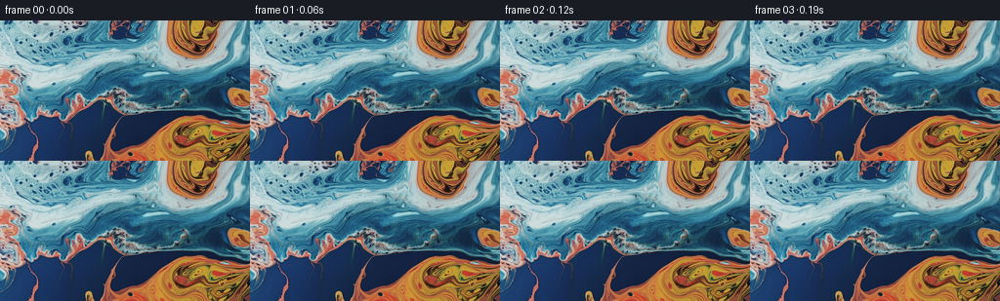
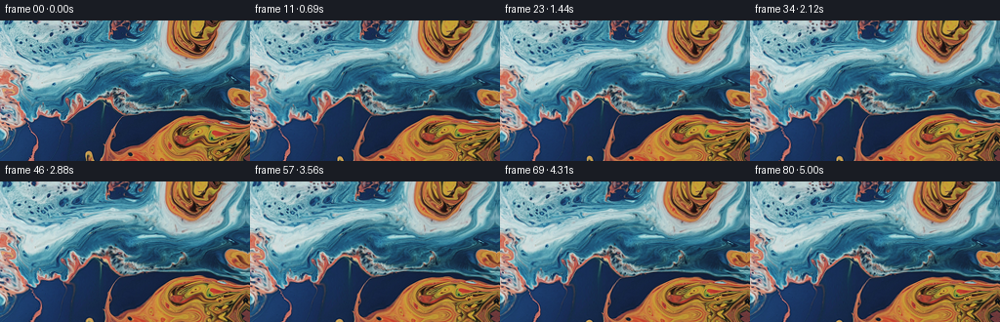
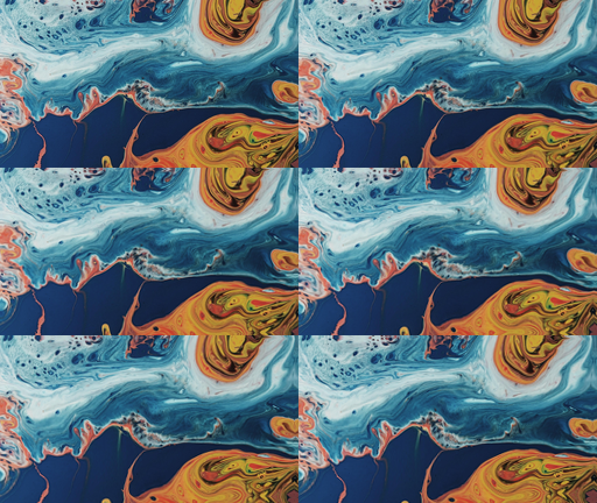

CODING AGENTS AS PIXEL WORLD MODELS
traex/DeepSeek-V4.1-Flash · 0000_s3
点击播放 · 原生 RGB 像素
逐轮保存的候选
回放视频、检查图与代码变化。
每份候选均可单独播放。实际图片检查记录在下方工具轨迹中。
候选 01播放与检查图
点击播放 · 原生 RGB 像素

展开代码变化
--- 上一保存版本
+++ 本次保存版本
@@ -0,0 +1,115 @@
+from pathlib import Path
+
+import cv2
+import numpy as np
+from PIL import Image
+
+import artifact_io
+
+
+CASE_DIR = Path(__file__).resolve().parent
+WIDTH, HEIGHT = 256, 144
+FRAME_COUNT = 81
+FPS = 16
+
+
+def _smoothstep(value):
+ return value * value * (3.0 - 2.0 * value)
+
+
+def _displacement_fields(t):
+ """Return smooth, incompressible-looking coordinate offsets for one time."""
+ yy, xx = np.mgrid[0:HEIGHT, 0:WIDTH].astype(np.float32)
+ x = xx / (WIDTH - 1)
+ y = yy / (HEIGHT - 1)
+
+ # A broad, gently sheared current carries the marbling toward the upper right.
+ wave = np.sin(2.0 * np.pi * (0.72 * y + 0.18 * t))
+ dx = t * (2.2 + 1.1 * wave) * (0.55 + 0.45 * y)
+ dy = t * (-0.75 + 0.48 * np.sin(2.0 * np.pi * (0.55 * x - 0.10 * t)))
+
+ # Rotating regions follow the three visually dominant color masses.
+ vortices = (
+ (0.225, 0.625, 0.115, 0.185, 8.5, 0.85),
+ (0.840, 0.135, 0.090, 0.135, -7.0, 0.70),
+ (0.610, 0.955, 0.260, 0.145, 5.8, 0.60),
+ (0.570, 0.340, 0.180, 0.090, -3.2, 0.35),
+ )
+ for cx, cy, sx, sy, strength, phase in vortices:
+ ux = (x - cx) / sx
+ uy = (y - cy) / sy
+ weight = np.exp(-0.5 * (ux * ux + uy * uy))
+ local_wave = 0.88 + 0.12 * np.sin(2.0 * np.pi * (0.55 * t + phase))
+ dx += strength * local_wave * weight * (-uy * sy / HEIGHT)
+ dy += strength * local_wave * weight * (ux * sx / WIDTH)
+
+ # Fine ripples travel through the viscous surface without disturbing its palette.
+ fine_phase = 2.0 * np.pi * t
+ dx += 0.55 * np.sin(0.105 * xx - 0.071 * yy + 0.80 * fine_phase)
+ dx += 0.28 * np.sin(0.041 * xx + 0.117 * yy - 1.10 * fine_phase)
+ dy += 0.45 * np.sin(0.083 * xx + 0.061 * yy - 0.90 * fine_phase)
+ dy += 0.24 * np.sin(0.038 * xx - 0.102 * yy + 1.20 * fine_phase)
+
+ return xx + dx, yy + dy
+
+
+def _liquid_sheen(image, t):
+ """Add restrained moving light shaped by broad, low-frequency surface relief."""
+ gray = cv2.cvtColor(image, cv2.COLOR_RGB2GRAY).astype(np.float32) / 255.0
+ height = cv2.GaussianBlur(gray, (0, 0), 3.2)
+ grad_x = cv2.Sobel(height, cv2.CV_32F, 1, 0, ksize=3)
+ grad_y = cv2.Sobel(height, cv2.CV_32F, 0, 1, ksize=3)
+
+ # The normal of the low-passed color field gives soft moving reflections.
+ nx = -1.35 * grad_x
+ ny = -1.35 * grad_y
+ nz = np.ones_like(height)
+ norm = np.sqrt(nx * nx + ny * ny + nz * nz)
+ nx, ny, nz = nx / norm, ny / norm, nz / norm
+ lx = 0.42 * np.cos(2.0 * np.pi * (0.07 * t + 0.08))
+ ly = -0.34 * np.sin(2.0 * np.pi * (0.06 * t + 0.16))
+ lz = np.sqrt(max(0.0, 1.0 - lx * lx - ly * ly))
+ diffuse = np.clip(nx * lx + ny * ly + nz * lz, 0.0, 1.0)
+ highlight = np.clip((diffuse - 0.86) / 0.14, 0.0, 1.0) ** 2
+
+ # Highlights favor pale and saturated regions, as on glossy paint.
+ pale = cv2.GaussianBlur(gray, (0, 0), 7.0)
+ strength = (0.20 + 0.80 * pale) * 0.075 * np.sin(np.pi * t)
+ out = image.astype(np.float32) * (1.0 + 0.10 * strength[..., None])
+ out += highlight[..., None] * (strength * 255.0)[..., None] * 0.55
+ return np.clip(out, 0, 255)
+
+
+def generate_frames(first_frame):
+ source = np.asarray(first_frame, dtype=np.uint8)
+ frames = np.empty((FRAME_COUNT, HEIGHT, WIDTH, 3), dtype=np.uint8)
+ frames[0] = source
+
+ for index in range(1, FRAME_COUNT):
+ raw_t = index / (FRAME_COUNT - 1)
+ t = _smoothstep(raw_t)
+ map_x, map_y = _displacement_fields(t)
+ warped = cv2.remap(
+ source,
+ map_x,
+ map_y,
+ interpolation=cv2.INTER_CUBIC,
+ borderMode=cv2.BORDER_REFLECT_101,
+ )
+ frames[index] = np.rint(_liquid_sheen(warped, t)).astype(np.uint8)
+
+ frames[0] = source
+ return frames
+
+
+def main():
+ first_frame = Image.open(CASE_DIR / "first_frame.png").convert("RGB")
+ if first_frame.size != (WIDTH, HEIGHT):
+ first_frame = first_frame.resize((WIDTH, HEIGHT), Image.Resampling.LANCZOS)
+ frames = generate_frames(first_frame)
+ artifact_io.save(frames, CASE_DIR)
+ print(f"saved {len(frames)} frames at {WIDTH}x{HEIGHT}, {FPS} fps")
+
+
+if __name__ == "__main__":
+ main()
候选 02播放与检查图
点击播放 · 原生 RGB 像素

展开代码变化
代码未变化；重新保存了产物。
候选 03播放与检查图
点击播放 · 原生 RGB 像素

展开代码变化
--- 上一保存版本
+++ 本次保存版本
@@ -25,30 +25,30 @@
# A broad, gently sheared current carries the marbling toward the upper right.
wave = np.sin(2.0 * np.pi * (0.72 * y + 0.18 * t))
- dx = t * (2.2 + 1.1 * wave) * (0.55 + 0.45 * y)
- dy = t * (-0.75 + 0.48 * np.sin(2.0 * np.pi * (0.55 * x - 0.10 * t)))
+ dx = t * (3.5 + 1.5 * wave) * (0.55 + 0.45 * y)
+ dy = t * (-1.2 + 0.9 * np.sin(2.0 * np.pi * (0.55 * x - 0.10 * t)))
# Rotating regions follow the three visually dominant color masses.
vortices = (
- (0.225, 0.625, 0.115, 0.185, 8.5, 0.85),
- (0.840, 0.135, 0.090, 0.135, -7.0, 0.70),
- (0.610, 0.955, 0.260, 0.145, 5.8, 0.60),
- (0.570, 0.340, 0.180, 0.090, -3.2, 0.35),
+ (0.225, 0.625, 0.115, 0.185, 10.0, 0.85),
+ (0.840, 0.135, 0.090, 0.135, -8.5, 0.70),
+ (0.610, 0.955, 0.260, 0.145, 7.2, 0.60),
+ (0.570, 0.340, 0.180, 0.090, -5.0, 0.35),
)
for cx, cy, sx, sy, strength, phase in vortices:
ux = (x - cx) / sx
uy = (y - cy) / sy
weight = np.exp(-0.5 * (ux * ux + uy * uy))
local_wave = 0.88 + 0.12 * np.sin(2.0 * np.pi * (0.55 * t + phase))
- dx += strength * local_wave * weight * (-uy * sy / HEIGHT)
- dy += strength * local_wave * weight * (ux * sx / WIDTH)
+ dx += strength * local_wave * weight * (-uy)
+ dy += strength * local_wave * weight * ux * (sx / sy)
# Fine ripples travel through the viscous surface without disturbing its palette.
fine_phase = 2.0 * np.pi * t
- dx += 0.55 * np.sin(0.105 * xx - 0.071 * yy + 0.80 * fine_phase)
- dx += 0.28 * np.sin(0.041 * xx + 0.117 * yy - 1.10 * fine_phase)
- dy += 0.45 * np.sin(0.083 * xx + 0.061 * yy - 0.90 * fine_phase)
- dy += 0.24 * np.sin(0.038 * xx - 0.102 * yy + 1.20 * fine_phase)
+ dx += 1.10 * np.sin(0.105 * xx - 0.071 * yy + 0.80 * fine_phase)
+ dx += 0.55 * np.sin(0.041 * xx + 0.117 * yy - 1.10 * fine_phase)
+ dy += 0.90 * np.sin(0.083 * xx + 0.061 * yy - 0.90 * fine_phase)
+ dy += 0.48 * np.sin(0.038 * xx - 0.102 * yy + 1.20 * fine_phase)
return xx + dx, yy + dy
候选 04播放与检查图
点击播放 · 原生 RGB 像素

展开代码变化
代码未变化；重新保存了产物。
候选 05播放与检查图
点击播放 · 原生 RGB 像素

展开代码变化
--- 上一保存版本
+++ 本次保存版本
@@ -22,6 +22,10 @@
yy, xx = np.mgrid[0:HEIGHT, 0:WIDTH].astype(np.float32)
x = xx / (WIDTH - 1)
y = yy / (HEIGHT - 1)
+
+ # Ease in after the fixed opening frame; avoid a conspicuous first-frame pop.
+ eased = _smoothstep(min(1.0, t / 0.16))
+ t = eased * t
# A broad, gently sheared current carries the marbling toward the upper right.
wave = np.sin(2.0 * np.pi * (0.72 * y + 0.18 * t))
候选 06播放与检查图
点击播放 · 原生 RGB 像素

展开代码变化
代码未变化；重新保存了产物。
候选 07播放与检查图
点击播放 · 原生 RGB 像素

展开代码变化
--- 上一保存版本
+++ 本次保存版本
@@ -78,7 +78,8 @@
# Highlights favor pale and saturated regions, as on glossy paint.
pale = cv2.GaussianBlur(gray, (0, 0), 7.0)
- strength = (0.20 + 0.80 * pale) * 0.075 * np.sin(np.pi * t)
+ fade = _smoothstep(min(1.0, t / 0.10))
+ strength = (0.20 + 0.80 * pale) * 0.075 * np.sin(np.pi * t) * fade
out = image.astype(np.float32) * (1.0 + 0.10 * strength[..., None])
out += highlight[..., None] * (strength * 255.0)[..., None] * 0.55
return np.clip(out, 0, 255)
候选 08播放与检查图
点击播放 · 原生 RGB 像素

展开代码变化
--- 上一保存版本
+++ 本次保存版本
@@ -26,6 +26,7 @@
# Ease in after the fixed opening frame; avoid a conspicuous first-frame pop.
eased = _smoothstep(min(1.0, t / 0.16))
t = eased * t
+ ripple_fade = eased
# A broad, gently sheared current carries the marbling toward the upper right.
wave = np.sin(2.0 * np.pi * (0.72 * y + 0.18 * t))
@@ -49,10 +50,10 @@
# Fine ripples travel through the viscous surface without disturbing its palette.
fine_phase = 2.0 * np.pi * t
- dx += 1.10 * np.sin(0.105 * xx - 0.071 * yy + 0.80 * fine_phase)
- dx += 0.55 * np.sin(0.041 * xx + 0.117 * yy - 1.10 * fine_phase)
- dy += 0.90 * np.sin(0.083 * xx + 0.061 * yy - 0.90 * fine_phase)
- dy += 0.48 * np.sin(0.038 * xx - 0.102 * yy + 1.20 * fine_phase)
+ dx += ripple_fade * 1.10 * np.sin(0.105 * xx - 0.071 * yy + 0.80 * fine_phase)
+ dx += ripple_fade * 0.55 * np.sin(0.041 * xx + 0.117 * yy - 1.10 * fine_phase)
+ dy += ripple_fade * 0.90 * np.sin(0.083 * xx + 0.061 * yy - 0.90 * fine_phase)
+ dy += ripple_fade * 0.48 * np.sin(0.038 * xx - 0.102 * yy + 1.20 * fine_phase)
return xx + dx, yy + dy
候选 09播放与检查图
点击播放 · 原生 RGB 像素

展开代码变化
代码未变化；重新保存了产物。
候选 10播放与检查图
点击播放 · 原生 RGB 像素

展开代码变化
--- 上一保存版本
+++ 本次保存版本
@@ -24,7 +24,7 @@
y = yy / (HEIGHT - 1)
# Ease in after the fixed opening frame; avoid a conspicuous first-frame pop.
- eased = _smoothstep(min(1.0, t / 0.16))
+ eased = _smoothstep(min(1.0, t / 0.32))
t = eased * t
ripple_fade = eased
@@ -79,7 +79,7 @@
# Highlights favor pale and saturated regions, as on glossy paint.
pale = cv2.GaussianBlur(gray, (0, 0), 7.0)
- fade = _smoothstep(min(1.0, t / 0.10))
+ fade = _smoothstep(min(1.0, t / 0.22))
strength = (0.20 + 0.80 * pale) * 0.075 * np.sin(np.pi * t) * fade
out = image.astype(np.float32) * (1.0 + 0.10 * strength[..., None])
out += highlight[..., None] * (strength * 255.0)[..., None] * 0.55
候选 11播放与检查图
点击播放 · 原生 RGB 像素

展开代码变化
代码未变化；重新保存了产物。
候选 12播放与检查图
点击播放 · 原生 RGB 像素

展开代码变化
--- 上一保存版本
+++ 本次保存版本
@@ -45,8 +45,8 @@
uy = (y - cy) / sy
weight = np.exp(-0.5 * (ux * ux + uy * uy))
local_wave = 0.88 + 0.12 * np.sin(2.0 * np.pi * (0.55 * t + phase))
- dx += strength * local_wave * weight * (-uy)
- dy += strength * local_wave * weight * ux * (sx / sy)
+ dx += t * strength * local_wave * weight * (-uy)
+ dy += t * strength * local_wave * weight * ux * (sx / sy)
# Fine ripples travel through the viscous surface without disturbing its palette.
fine_phase = 2.0 * np.pi * t
候选 13播放与检查图
点击播放 · 原生 RGB 像素

展开代码变化
代码未变化；重新保存了产物。
候选 14播放与检查图
点击播放 · 原生 RGB 像素

展开代码变化
--- 上一保存版本
+++ 本次保存版本
@@ -23,9 +23,8 @@
x = xx / (WIDTH - 1)
y = yy / (HEIGHT - 1)
- # Ease in after the fixed opening frame; avoid a conspicuous first-frame pop.
- eased = _smoothstep(min(1.0, t / 0.32))
- t = eased * t
+ # Keep the fixed opening frame continuous, then let the liquid accelerate gently.
+ eased = _smoothstep(min(1.0, t / 0.16))
ripple_fade = eased
# A broad, gently sheared current carries the marbling toward the upper right.
@@ -79,7 +78,7 @@
# Highlights favor pale and saturated regions, as on glossy paint.
pale = cv2.GaussianBlur(gray, (0, 0), 7.0)
- fade = _smoothstep(min(1.0, t / 0.22))
+ fade = _smoothstep(min(1.0, t / 0.12))
strength = (0.20 + 0.80 * pale) * 0.075 * np.sin(np.pi * t) * fade
out = image.astype(np.float32) * (1.0 + 0.10 * strength[..., None])
out += highlight[..., None] * (strength * 255.0)[..., None] * 0.55
候选 15播放与检查图
点击播放 · 原生 RGB 像素

展开代码变化
代码未变化；重新保存了产物。
候选 16播放与检查图
点击播放 · 原生 RGB 像素

展开代码变化
--- 上一保存版本
+++ 本次保存版本
@@ -24,7 +24,7 @@
y = yy / (HEIGHT - 1)
# Keep the fixed opening frame continuous, then let the liquid accelerate gently.
- eased = _smoothstep(min(1.0, t / 0.16))
+ eased = _smoothstep(min(1.0, t / 0.08))
ripple_fade = eased
# A broad, gently sheared current carries the marbling toward the upper right.
@@ -78,7 +78,7 @@
# Highlights favor pale and saturated regions, as on glossy paint.
pale = cv2.GaussianBlur(gray, (0, 0), 7.0)
- fade = _smoothstep(min(1.0, t / 0.12))
+ fade = _smoothstep(min(1.0, t / 0.06))
strength = (0.20 + 0.80 * pale) * 0.075 * np.sin(np.pi * t) * fade
out = image.astype(np.float32) * (1.0 + 0.10 * strength[..., None])
out += highlight[..., None] * (strength * 255.0)[..., None] * 0.55
候选 17播放与检查图
可观测工具轨迹
实际执行的命令与返回图片。
命令 1exit 0
/bin/bash -c "pwd && rg --files -g '"'!*.png'"' -g '"'!*.jpg'"' -g '"'!*.jpeg'"' -g '"'!*.mp4'"' | sed -n '1,160p'"
命令 2exit 0
/bin/bash -c "printf '%s\\n' '--- prompt.txt ---'; sed -n '1,240p' prompt.txt; printf '%s\\n' '--- GENERATION_RULES.md ---'; sed -n '1,320p' GENERATION_RULES.md"
命令 3exit 0
/bin/bash -c 'ls -la && file first_frame.png && identify first_frame.png 2>/dev/null || true'
命令 4exit 0
/bin/bash -c "sed -n '1,260p' artifact_io.py"
命令 5exit 0
/bin/bash -c "sed -n '1,200p' task_spec.json; python - <<'PY'
from PIL import Image
im=Image.open('first_frame.png')
print(im.mode, im.size)
PY"命令 6exit 0
/bin/bash -c "python - <<'PY' import importlib.util for m in ['numpy','PIL','scipy','cv2','imageio','skimage']: print(m, bool(importlib.util.find_spec(m))) PY"
命令 7exit 0
/bin/bash -c "command -v ffmpeg || true; python - <<'PY'
import cv2, numpy as np
im=cv2.imread('first_frame.png')
print('mean', im.mean(axis=(0,1)))
# representative color quantiles
for c,n in enumerate('BGR'):
print(n, np.percentile(im[:,:,c],[5,25,50,75,95]).round(1))
PY"命令 8exit 0
/bin/bash -c 'python generate.py'
命令 9exit 0
/bin/bash -c "python - <<'PY'
import numpy as np
from PIL import Image
im=np.array(Image.open('first_frame.png')).astype(np.float32)
# assess flow statistics by importing implementation
import generate as g
for t in [0.25,0.5,0.75,1.0]:
x,y=g._displacement_fields(t)
yy,xx=np.mgrid[0:144,0:256]
print(t, 'dx', (x-xx).min(),(x-xx).max(),(x-xx).mean(), 'dy',(y-yy).min(),(y-yy).max(),(y-yy).mean())
PY"命令 10exit 127
/bin/bash -c 'python generate.py && ffmpeg -y -hide_banner -loglevel error -framerate 16 -i frames/%02d.png -c:v libx264 -preset slow -crf 14 -pix_fmt yuv420p video.mp4 && ls -lh pixels.npz video.mp4 inspection.png'
命令 11exit 0
/bin/bash -c "python - <<'PY'
import numpy as np
from PIL import Image
src=np.asarray(Image.open('first_frame.png'))
for i in [0,1,2,4,8,20,40,60,80]:
f=np.asarray(Image.open(f'frames/{i:02d}.png')).astype(np.float32)
print(i, 'mse',np.mean((f-src)**2), 'mean',f.mean(axis=(0,1)).round(1), 'diff_from_prev', None if i==0 else round(float(np.mean((f-np.asarray(Image.open(f'frames/{i-1:02d}.png')).astype(np.float32))**2)),2))
print('frame0 identical',np.array_equal(src,np.asarray(Image.open('frames/00.png'))))
PY"命令 12exit 0
/bin/bash -c "python - <<'PY' import importlib.util for m in ['imageio_ffmpeg','av','moviepy']: print(m, bool(importlib.util.find_spec(m))) PY"
命令 13exit 0
/bin/bash -c "python - <<'PY'
import numpy as np
from PIL import Image
prev=np.asarray(Image.open('frames/00.png')).astype(np.float32)
vals=[]
for i in range(1,81):
f=np.asarray(Image.open(f'frames/{i:02d}.png')).astype(np.float32)
vals.append(np.mean(np.abs(f-prev)))
prev=f
print('consecutive MAE min/median/max:',min(vals),np.median(vals),max(vals))
print('first 10:',np.round(vals[:10],2).tolist())
print('last 10:',np.round(vals[-10:],2).tolist())
PY"命令 14exit 0
/bin/bash -c "python generate.py && python - <<'PY'
import imageio.v2 as imageio
import numpy as np
from PIL import Image
frames=[np.asarray(Image.open(f'frames/{i:02d}.png')) for i in range(81)]
imageio.mimsave('video.mp4', frames, fps=16, codec='libx264', quality=8, macro_block_size=1)
prev=frames[0].astype(np.float32)
vals=[]
for f in frames[1:]:
a=f.astype(np.float32); vals.append(float(np.mean(np.abs(a-prev)))); prev=a
print('MAE min/median/max:', round(min(vals),3), round(float(np.median(vals)),3), round(max(vals),3))
print('first 5:', np.round(vals[:5],2).tolist())
print('frame0 identical:',np.array_equal(np.asarray(Image.open('first_frame.png')),frames[0]))
PY
ls -lh video.mp4 pixels.npz inspection.png"命令 15exit 0
/bin/bash -c "python - <<'PY'
import numpy as np
from PIL import Image
for i in range(0,16):
f=np.asarray(Image.open(f'frames/{i:02d}.png')).astype(np.int16)
s=np.asarray(Image.open('first_frame.png')).astype(np.int16)
print(i, np.abs(f-s).mean(), np.abs(f-s).max())
PY"命令 16exit 0
/bin/bash -c "python generate.py && python - <<'PY'
import numpy as np
from PIL import Image
frames=[np.asarray(Image.open(f'frames/{i:02d}.png')).astype(np.float32) for i in range(81)]
vals=[float(np.mean(np.abs(b-a))) for a,b in zip(frames,frames[1:])]
print('MAE min/median/max:', round(min(vals),3), round(float(np.median(vals)),3), round(max(vals),3))
print('first 10:',np.round(vals[:10],3).tolist())
print('frame0 identical:',np.array_equal(frames[0].astype(np.uint8),np.asarray(Image.open('first_frame.png'))))
PY"命令 17exit 0
/bin/bash -c "python generate.py && python - <<'PY'
import numpy as np
from PIL import Image
frames=[np.asarray(Image.open(f'frames/{i:02d}.png')).astype(np.float32) for i in range(81)]
vals=[float(np.mean(np.abs(b-a))) for a,b in zip(frames,frames[1:])]
print('MAE min/median/max:', round(min(vals),3), round(float(np.median(vals)),3), round(max(vals),3))
print('first 10:',np.round(vals[:10],3).tolist())
print('frame0 identical:',np.array_equal(frames[0].astype(np.uint8),np.asarray(Image.open('first_frame.png'))))
PY"命令 18exit 0
/bin/bash -c "python - <<'PY'
import cv2,numpy as np
from PIL import Image
s=np.asarray(Image.open('first_frame.png'))
f=np.asarray(Image.open('frames/01.png'))
d=np.abs(f.astype(int)-s.astype(int))
print('diff bbox',np.where(d.max(2)>10)[1].min(),np.where(d.max(2)>10)[1].max(),np.where(d.max(2)>10)[0].min(),np.where(d.max(2)>10)[0].max())
print('top diff rows',np.argsort(d.mean((1,2)))[-10:], np.sort(d.mean((1,2)))[-10:])
Image.fromarray(np.clip(d*8,0,255).astype('uint8')).save('debug_diff.png')
# test identity
yy,xx=np.mgrid[0:144,0:256].astype(np.float32)
for interp in [cv2.INTER_NEAREST,cv2.INTER_LINEAR,cv2.INTER_CUBIC]:
r=cv2.remap(s,xx,yy,interpolation=interp,borderMode=cv2.BORDER_REFLECT_101)
print(interp,np.abs(r.astype(int)-s.astype(int)).mean(),np.abs(r.astype(int)-s.astype(int)).max())
PY"命令 19exit 0
/bin/bash -c "python - <<'PY'
import generate, numpy as np, cv2
from PIL import Image
s=np.asarray(Image.open('first_frame.png'))
x,y=generate._displacement_fields(generate._smoothstep(1/80)*1/80)
yy,xx=np.mgrid[0:144,0:256].astype(np.float32)
print('dx min max', (x-xx).min(),(x-xx).max(),'dy',(y-yy).min(),(y-yy).max())
r=cv2.remap(s,x,y,interpolation=cv2.INTER_CUBIC,borderMode=cv2.BORDER_REFLECT_101)
print('remap',np.abs(r.astype(int)-s.astype(int)).mean(),np.abs(r.astype(int)-s.astype(int)).max())
o=generate._liquid_sheen(r,generate._smoothstep(1/80)*1/80)
print('sheen',np.abs(o.astype(int)-s.astype(int)).mean())
print('first mean colors', r.mean((0,1)), o.mean((0,1)), s.mean((0,1)))
PY"命令 20exit 0
/bin/bash -c "python - <<'PY'
import generate, numpy as np
t=generate._smoothstep(1/80)*1/80
x,y=generate._displacement_fields(t)
yy,xx=np.mgrid[0:144,0:256]
for name,a,b in [('dx',x,xx),('dy',y,yy)]:
d=a-b
print(name,'mean',d.mean(),'center',d[72,128],'corners',d[0,0],d[0,-1],d[-1,0],d[-1,-1])
PY"命令 21exit 0
/bin/bash -c "python generate.py && python - <<'PY'
import numpy as np
from PIL import Image
frames=[np.asarray(Image.open(f'frames/{i:02d}.png')).astype(np.float32) for i in range(81)]
vals=[float(np.mean(np.abs(b-a))) for a,b in zip(frames,frames[1:])]
print('MAE min/median/max:', round(min(vals),3), round(float(np.median(vals)),3), round(max(vals),3))
print('first 12:',np.round(vals[:12],3).tolist())
print('frame0 identical:',np.array_equal(frames[0].astype(np.uint8),np.asarray(Image.open('first_frame.png'))))
PY"命令 22exit 0
/bin/bash -c "python - <<'PY' import generate, numpy as np for i in [1,2,4,8,16,32,64,80]: t=generate._smoothstep(i/80) e=generate._smoothstep(min(1.0,t/0.32)); tt=e*t x,y=generate._displacement_fields(tt) yy,xx=np.mgrid[0:144,0:256] d=np.sqrt((x-xx)**2+(y-yy)**2) print(i,'t',round(t,4),'tt',round(tt,4),'flow mean/max',round(d.mean(),2),round(d.max(),2)) PY"
命令 23exit 0
/bin/bash -c "python generate.py && python - <<'PY'
import numpy as np
from PIL import Image
frames=[np.asarray(Image.open(f'frames/{i:02d}.png')).astype(np.float32) for i in range(81)]
vals=[float(np.mean(np.abs(b-a))) for a,b in zip(frames,frames[1:])]
print('MAE min/median/max:', round(min(vals),3), round(float(np.median(vals)),3), round(max(vals),3))
print('first 12:',np.round(vals[:12],3).tolist())
print('last 8:',np.round(vals[-8:],3).tolist())
print('frame0 identical:',np.array_equal(frames[0].astype(np.uint8),np.asarray(Image.open('first_frame.png'))))
PY"命令 24exit 0
/bin/bash -c "python generate.py && python - <<'PY'
import numpy as np
from PIL import Image
frames=[np.asarray(Image.open(f'frames/{i:02d}.png')).astype(np.float32) for i in range(81)]
vals=[float(np.mean(np.abs(b-a))) for a,b in zip(frames,frames[1:])]
print('MAE min/median/max:', round(min(vals),3), round(float(np.median(vals)),3), round(max(vals),3))
print('first 12:',np.round(vals[:12],3).tolist())
print('last 8:',np.round(vals[-8:],3).tolist())
print('frame0 identical:',np.array_equal(frames[0].astype(np.uint8),np.asarray(Image.open('first_frame.png'))))
PY"命令 25exit 0
/bin/bash -c "python - <<'PY'
import imageio.v2 as imageio
import numpy as np
from PIL import Image
frames=[np.asarray(Image.open(f'frames/{i:02d}.png')) for i in range(81)]
imageio.mimsave('video.mp4', frames, fps=16, codec='libx264', quality=8, macro_block_size=1)
# Contact sheet at 0, 10, 20, 40, 60, 80.
inds=[0,10,20,40,60,80]
thumbs=[Image.fromarray(frames[i]).resize((512,288), Image.Resampling.NEAREST) for i in inds]
sheet=Image.new('RGB',(1024,864),(20,20,20))
for j,im in enumerate(thumbs): sheet.paste(im,((j%2)*512,(j//2)*288))
sheet.save('.tmp/final_contact.png')
print('encoded video.mp4')
PY"命令 26exit 0
/bin/bash -c "python - <<'PY' import generate, numpy as np for i in [1,4,8,16,32,64,80]: t=generate._smoothstep(i/80) x,y=generate._displacement_fields(t) yy,xx=np.mgrid[0:144,0:256] d=np.sqrt((x-xx)**2+(y-yy)**2) print(i, round(float(d.mean()),2), round(float(d.max()),2)) PY"
命令 27exit 0
/bin/bash -c "python generate.py && python - <<'PY'
import numpy as np
from PIL import Image
frames=[np.asarray(Image.open(f'frames/{i:02d}.png')).astype(np.float32) for i in range(81)]
vals=[float(np.mean(np.abs(b-a))) for a,b in zip(frames,frames[1:])]
print('MAE min/median/max:', round(min(vals),3), round(float(np.median(vals)),3), round(max(vals),3))
print('first 12:',np.round(vals[:12],3).tolist())
print('last 8:',np.round(vals[-8:],3).tolist())
print('frame0 identical:',np.array_equal(frames[0].astype(np.uint8),np.asarray(Image.open('first_frame.png'))))
PY"命令 28exit 0
/bin/bash -c "python - <<'PY'
import imageio.v2 as imageio
import numpy as np
from PIL import Image
frames=[np.asarray(Image.open(f'frames/{i:02d}.png')) for i in range(81)]
imageio.mimsave('video.mp4', frames, fps=16, codec='libx264', quality=8, macro_block_size=1)
# Validate saved tensor and every RGB frame.
with np.load('pixels.npz') as data:
p=data['pixels']
print('pixels:',p.shape,p.dtype,'min/max',p.min(),p.max())
r=(p>>16)&255; g=(p>>8)&255; b=p&255
ok=all(np.array_equal(np.stack([r[:,:,i],g[:,:,i],b[:,:,i]],axis=-1),frames[i]) for i in range(81))
print('tensor matches PNG frames:',ok)
print('first tensor frame exact:',np.array_equal(np.stack([r[:,:,0],g[:,:,0],b[:,:,0]],axis=-1),np.asarray(Image.open('first_frame.png'))))
PY
ls -lh generate.py video.mp4 pixels.npz index.html frames | sed -n '1,20p'"视觉工具实际返回图片 1

视觉工具实际返回图片 2

视觉工具实际返回图片 3

视觉工具实际返回图片 4

视觉工具实际返回图片 5

保存候选 17 份；完成命令 28 次；可验证图片返回 5 张。原始 API 响应与完整日志保留在本地。